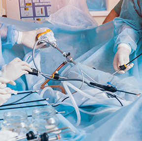

Laparoskopik (Kapalı) Çocuk Cerrahisi
Laparoskopik cerrahi, halk arasında "kapalı ameliyat" olarak bilinen modern cerrahi yöntemdir. Bu yöntemde ameliyat, karında büyük kesi yapmadan, küçük deliklerden yerleştirilen kamera ve özel cerrahi aletlerle gerçekleştirilir. Doç. Dr. İlknur Banlı Cesur, bu modern yöntemle çocuklarımızın cerrahi süreçlerini en az ağrı ve en hızlı iyileşme ile tamamlamaktadır.
Laparoskopik Olarak Yapılabilen Ameliyatlar

- Laparoskopik apendektomi
- Laparoskopik kasık fıtığı ameliyatı
- Laparoskopik inmemiş testis ameliyatı
- Laparoskopik orÅŸiopeksi
- Laparoskopik kolesistektomi
- Laparoskopik Meckel divertikülü ameliyatı
- Laparoskopik bağırsak biyopsisi
- Laparoskopik adezyon açılması
- Laparoskopik kist ve bazı karın içi kitle ameliyatları
- Laparoskopik fundoplikasyon
- Tanısal laparoskopi
- Seçilmiş olgularda diyafragma, dalak veya bağırsakla ilgili laparoskopik girişimler
Laparoskopik Çocuk Cerrahisinin Avantajları
- Daha küçük kesi izi
- Daha az ameliyat sonrası ağrı
- Hastanede kalış süresinin kısalabilmesi
- Günlük yaşama daha hızlı dönüş
- Daha iyi kozmetik görünüm
Her çocuk hasta için laparoskopik yöntem uygun olmayabilir. Ameliyatın açık mı yoksa laparoskopik mi yapılacağı; hastalığın türüne, çocuğun yaşına, klinik durumuna ve cerrahi değerlendirmeye göre belirlenir.